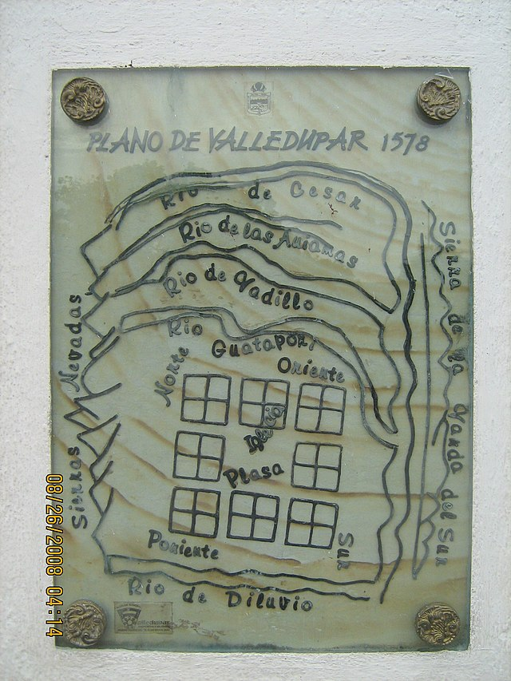
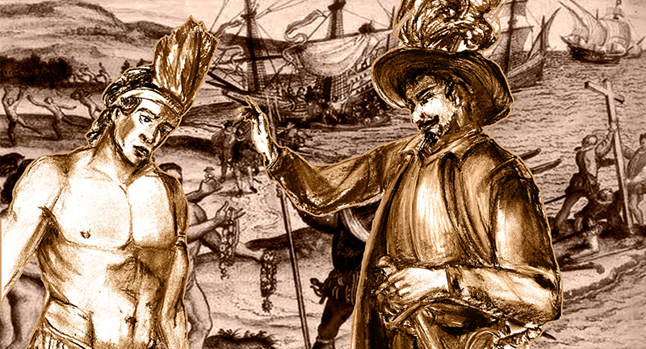
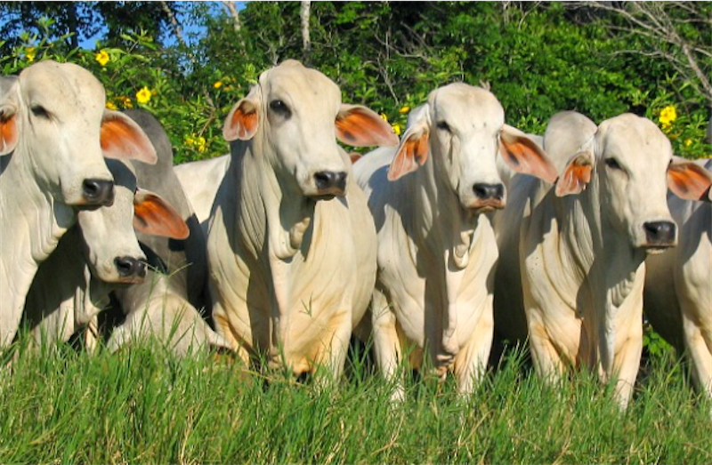
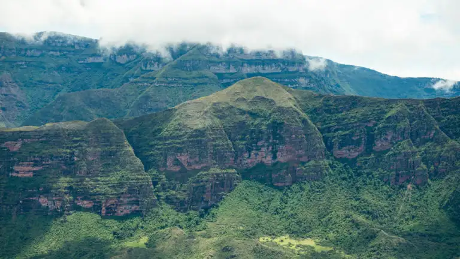

Fundación de Valledupar
Valledupar fue fundada oficialmente el 6 de enero de 1550 por el Capitán Hernando de Santana.

Conquista y Colonización
Durante la conquista española, la región estuvo bajo dominio del Cacique Upar.
Centro Histórico
El centro histórico alberga importantes edificaciones coloniales, como las iglesias de la Concepción y del Rosario.

Economía Regional
Valledupar ha sido un centro clave en la producción agrícola y ganadera de Colombia.

Festival Vallenato
Este famoso festival celebra la música vallenata, patrimonio cultural de la región.

Serranía de Perijá
Esta cadena montañosa es uno de los principales atractivos naturales cerca de Valledupar.